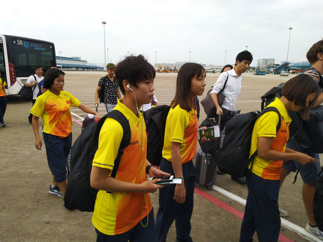
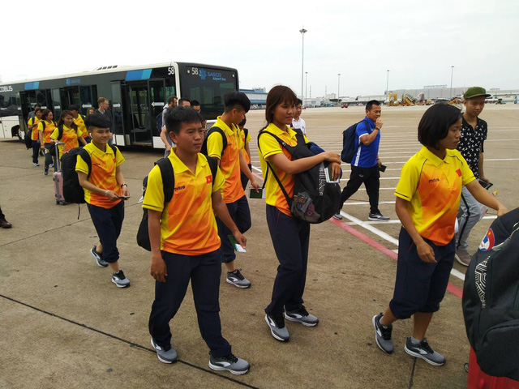

Sáng 13/8, đội tuyển nữ Việt Nam đã chính thức lên đường dự Asiad 2018 tại Indonesia. Đoàn quân HLV Mai Đức Chung hứng khởi về cơ hội làm nên kỳ tích ở sân chơi Á vận hội.
9h sáng ngày 13/8, đội tuyển nữ Việt Nam đã có mặt ở sân bay Nội Bài và di chuyển sang Indonesia để dự Asiad 2018. Toàn đội đã kết thúc chuyến tập huấn ở Nhật Bản và HLV Mai Đức Chung đánh giá thành công.
Phát biểu ở sân bay trước báo giới, HLV Mai Đức Chung chia sẻ: “Tại Asiad 2018, đội tuyển nữ Việt Nam rơi vào bảng đấu với hai đối thủ mạnh Nhật Bản và Thái Lan. Nhật Bản đạt đắng cấp thế giới, còn Thái Lan là đối thủ rất mạnh ở Đông Nam Á.
Nữ Việt Nam gặp quá nhiều thử thách, nhưng tôi tin chúng tôi vẫn có cơ hội để đạt được thành tích tốt nhất. Toàn đội đang rất hứng khởi trong cuộc chiến tại sân chơi châu lục”.
Về đợt tập huấn dài ngày tại Nhật Bản, HLV Mai Đức Chung chia sẻ: “Chuyến tập trung lần này về cơ bản là thành công, toàn đội đã thu được những kết quả vô cùng tích cực. Các cầu thủ đang có trạng thái thể lực tốt nhất và tự tin lên đường sang Indonesia”.
Bóng đá nữ sẽ khởi tranh từ ngày 16/8 đến 31/8. Các cô gái Việt Nam sẽ phải cạnh tranh một trong hai vị trí đầu tiên để giành quyền vào tứ kết.